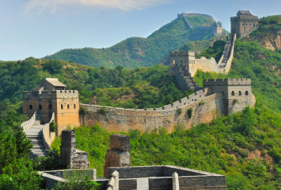
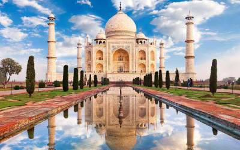
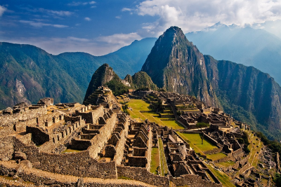

Who are we?
Not TripAdvisor is an online platform designed to help travelers—you—plan and enjoy trips by providing user-generated reviews, photos, and ratings for a wide range of locations. We feature attractions and tours, allowing you to explore options and make informed decisions based on the experiences of others. The platform also includes interactive maps, videos and imagine galleries to simplify trip planning. With the contributions of a global community, Not TripAdvisor serves as a trusted resource for discovering destinations and ensuring memorable travel experiences.
Testimonials
See what customers have said about us:
Excellent service ⭐⭐⭐⭐⭐
"Not TripAdvisor has been my go-to travel tool for years. It’s like having a personal guide everywhere I go. The reviews are detailed, and the photos from users make it so much easier to decide. I’ve discovered so many hidden gems thanks to this platform."
- Anonymous
Extraordinarily reliable ⭐⭐⭐⭐⭐
"Planning vacations used to be overwhelming, but Not TripAdvisor makes it so simple. I love being able to read honest reviews, and even book tours all in one place. The community is so helpful, and I trust the ratings completely. It’s my travel safety net."
- Riley Bonell
Great for all travelers ⭐⭐⭐⭐⭐
"Whether I’m traveling solo or with my family, TripAdvisor always helps me find the perfect spots. I’ve used it to locate kid-friendly attractions, romantic dinner spots, and even budget-friendly accommodations. It’s an essential part of my travel planning process."
- Joshua Joyce
...and a negative review just for good measure
Absolute rubbish
"the person who made this website is a loser and this service sucks. as if i'd ever give you even a single star you absolute tool"
- Jake Williamson
Need we say more?
Book with us or browse our top recommendations
Mount Fuji

Mount Fuji, Japan's iconic peak, stands as a breathtaking symbol of natural beauty and cultural significance. Rising 3,776 meters above sea level, this dormant volcano offers spectacular views, especially at sunrise. Whether you’re hiking...
Take me thereGreat Wall of China

The Great Wall of China is a monumental feat of ancient engineering, stretching over 13,000 miles through rugged landscapes. This iconic structure, built over several dynasties, offers visitors a chance to step back in time and marvel at its immense...
Take me thereTaj Mahal

The Taj Mahal, a UNESCO World Heritage site, is one of the most stunning monuments in the world, renowned for its breathtaking beauty and timeless elegance. Located in Agra, India, this marble mausoleum was built by...
Take me thereMachu Picchu

Machu Picchu, the ancient Inca city nestled high in the Peruvian Andes, is one of the most awe-inspiring archaeological sites in the world. Surrounded by mist-covered mountains, this UNESCO World Heritage site offers stunning views and a glimpse into the advanced engineering and culture of the...
Take me thereChrist the Redeemer
Christ the Redeemer, standing atop the Corcovado Mountain in Rio de Janeiro, Brazil, is a symbol of peace, faith, and Brazilian culture. This iconic statue, reaching 98 feet tall with arms...
Take me there